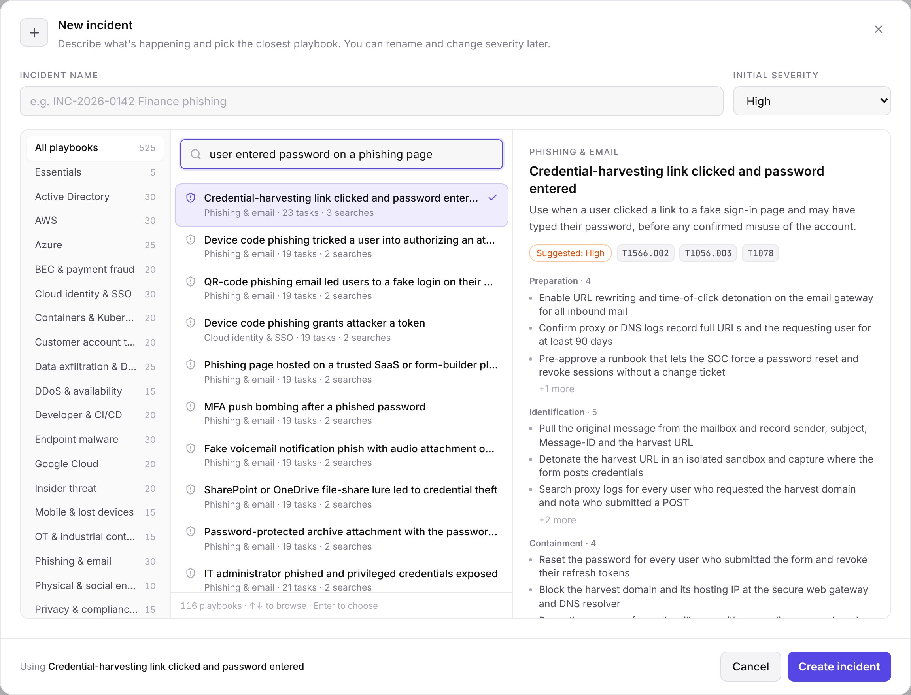
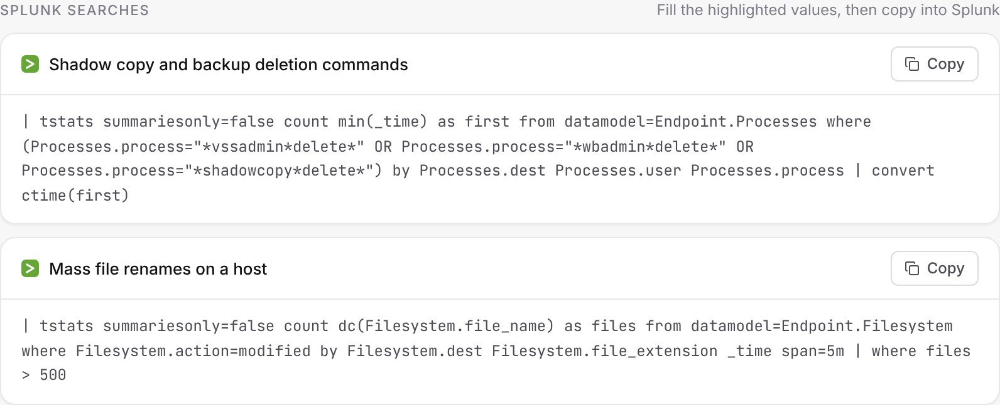
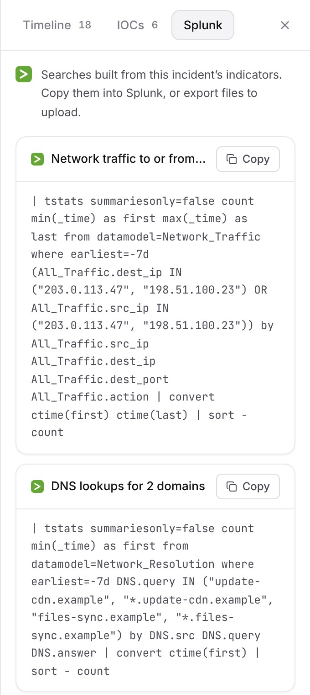

Incident response,
on rails.
Type what’s happening. Triage Desk hands your team a step-by-step response plan with the Splunk searches already written, records every action on a timeline, and turns it into a report leadership can read.
One HTML file · Windows, macOS, Linux · No install, no account, works air-gapped

From “something’s wrong” to a plan in ten seconds.
Analysts describe the situation in their own words, or paste the Splunk alert. Triage Desk finds the closest scenario and shows exactly what they’ll be asked to do before they start.
- Plain-language search. “aws key on github”, “okta admin compromised”, or an ATT&CK ID like T1486.
- Import from Splunk. Paste an alert, a notable event or a CSV export. The incident is named, severity is set and IOCs are extracted.
- Command palette. Ctrl+K reaches every action, incident, phase and playbook.

One calm screen for the worst day of the quarter.
No spreadsheet, no wiki page with last year’s phone numbers. Just the incident, the next step, and a record of everything you did.
Six-phase lifecycle
Preparation through Lessons Learned. Phases lock and unlock with the incident, so nobody skips ahead or forgets the review.
Timeline that writes itself
Every task, severity change, phase move, note and Splunk search lands on a T+ timeline automatically.
IOC extraction
Paste logs or a phishing email. A Rust/WebAssembly engine pulls and refangs IPs, domains, URLs, hashes, emails and CVEs.
Reports leadership can read
TLP-marked text, Markdown, or a print-ready report with your organization’s name, timings, IOCs and full timeline.
Keyboard-first
1–6 to jump phases, N for a note, T for the timeline, I to import an alert. Built for the analyst on hour three.
Your data stays put
Everything is saved in the browser on that machine. Back up and restore in one click, and it’s free in every edition.
525 scenarios. Every one written by hand.
Not one generic checklist with the nouns swapped. Each playbook names the actual logs, consoles, decisions and people for that scenario, across all six phases.
- Scenario-specific tasks for Preparation, Identification, Containment, Eradication, Recovery and Lessons Learned.
- MITRE ATT&CK mappings and a suggested starting severity.
- Make it yours. Duplicate any playbook and edit it to fit your environment.

The searches are already written.
Every scenario ships with Splunk searches for the phases where they matter. Fill in the highlighted values and copy, or run them live with the Connected edition.


Offline Free & Pro
Every Splunk tool that doesn’t need a connection. The app itself still can’t reach the network.
- SPL in every scenario playbook, with fill-in values
- Hunting searches generated from the incident’s IOCs
- Start incidents from alerts, notables or CSV exports
- Export IOC lookup tables and HEC-format timelines
Connected Live Splunk
A separate build that talks only to the Splunk you configure, straight from the analyst’s browser.
- Run searches and see results inside the incident
- Pull recent Enterprise Security notable events
- Send the timeline back to Splunk through HEC
- Tokens stay in the browser, never in backups or reports
// Generated from this incident's indicators | tstats summariesonly=false count from datamodel=Network_Traffic where All_Traffic.dest_ip IN ("203.0.113.47", "198.51.100.23") by All_Traffic.src_ip All_Traffic.dest_ip All_Traffic.dest_port | sort - count
Nothing leaves the machine. You can check.
Analysts paste attacker-controlled text all day, so the app is built to treat it as hostile. And security teams shouldn’t have to take a vendor’s word on privacy.
No network, enforced
The offline file carries a Content-Security-Policy with connect-src data:. The browser itself refuses every outbound connection. Open DevTools and look.
Hostile input stays inert
Pasted logs, imported playbooks and backups are validated. Reports escape everything and carry their own default-src 'none' policy. CSV exports defuse formula injection.
Licensing without a server
Keys are Ed25519-signed and verified offline. No activation server, no phone-home, and a lapsed key never locks you out of your own incidents.
Pay once. Keep it forever.
A one-time license with a year of updates. It doesn’t stop working when the year ends, and there’s no subscription to get approved.
Free
- One incident at a time
- General playbook; browse all 525
- Timeline, IOC extractor, text report
- Offline Splunk tools
Pro
- All 525 scenario playbooks
- Unlimited incidents
- Custom playbooks, import/export
- Branded Markdown and PDF reports
Team
- Everything in Pro
- One key for the whole team
- Licensed to your organization
- Email support from the developer
Connected
- Everything in Pro
- Run searches from the incident
- Pull ES notable events
- Send the timeline to HEC
Update renewals are about 40% of the original price per year, and entirely optional.
Questions security teams ask
Does it really work with no internet connection?
Yes. The offline edition is one HTML file with everything inlined, including fonts, the playbook library and the WebAssembly IOC engine. Copy it to an air-gapped workstation and double-click.
How does the Splunk integration work offline?
Every playbook includes ready-made SPL. Fill in the values you know and copy it into Splunk. You can also paste Splunk alerts in to start incidents, and export IOC lookups and HEC-format timelines to upload. Only the Connected edition talks to Splunk directly.
What does the Connected edition need on the Splunk side?
A search token, optionally a HEC token, a TLS certificate the browser trusts, and Splunk’s CORS setting (crossOriginSharingPolicy) allowing the page’s origin. The included SPLUNK.md walks through it in about ten minutes.
Where is our incident data stored?
In the browser’s local storage on the analyst’s machine. Nothing is uploaded anywhere. Export a backup from Settings at any time; backup and restore are free in every edition.
Are the playbooks really hand-written?
Yes. Each one targets a specific scenario, and an automated quality gate rejects generic filler and any two playbooks that share more than 40% of their tasks.
What happens when my year of updates ends?
Nothing breaks. Your key keeps working on every version released during your update window. Renew only if you want newer versions.
Be ready before the pager goes off.
Download the free edition, open it in your browser, and run your next tabletop with it.